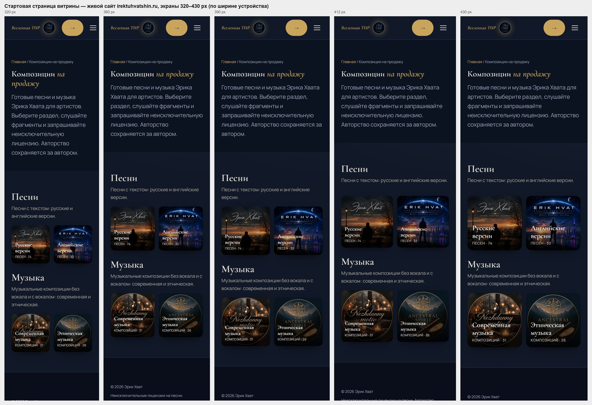
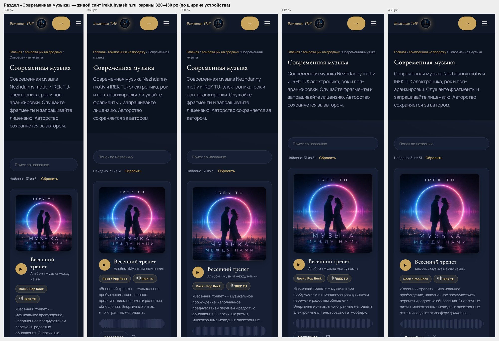
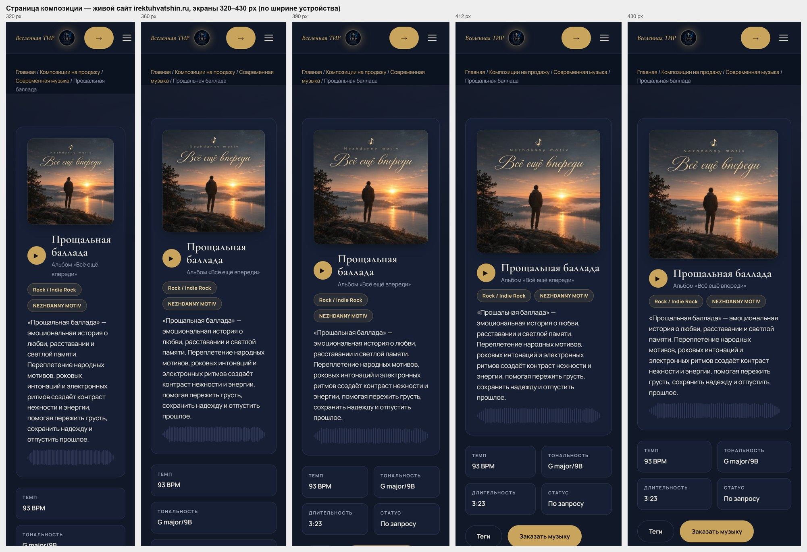

Витрина на экранах телефонов
Скриншоты живого сайта irektuhvatshin.ru на ширинах экрана 320, 360, 390, 412 и 430 px. На всех экранах страницы не шире экрана, горизонтальной прокрутки нет, подписи плиток выровнены.
Скриншоты сняты в Chrome с эмуляцией ширины экрана. Это не реальные телефоны, но ширина и вёрстка те же, что видит браузер на экране такого размера.
1. Стартовая страница
irektuhvatshin.ru/vitrina.html

2. Раздел «Современная музыка»
irektuhvatshin.ru/vitrina-sovremennaya.html

3. Страница композиции
irektuhvatshin.ru/muzyka-proschalnaya-ballada.html
